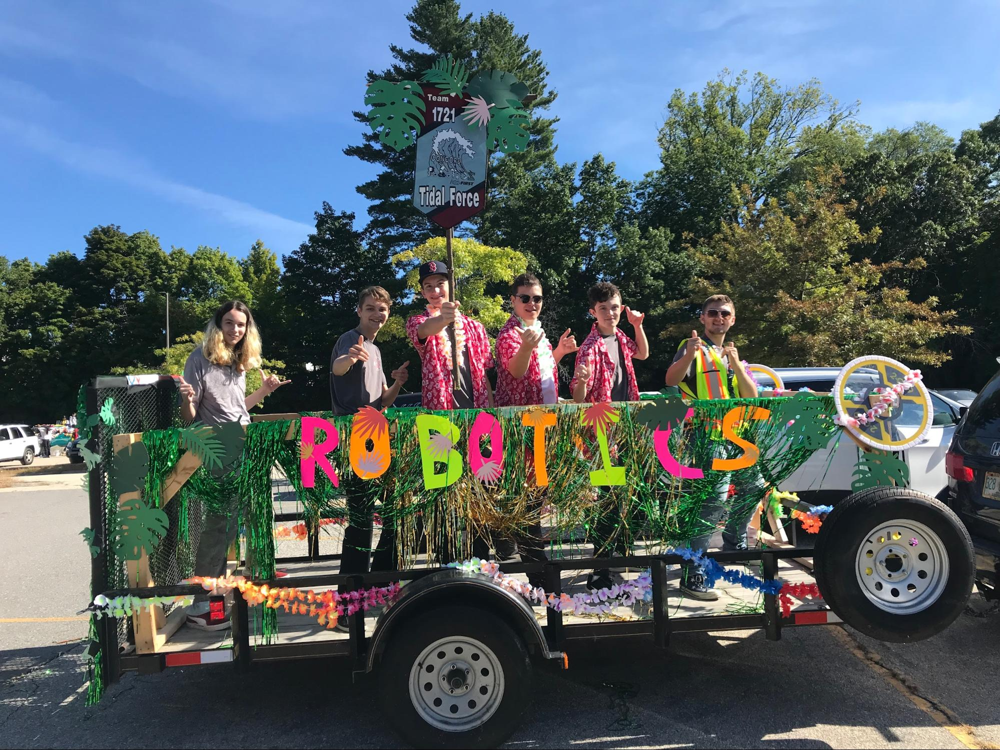
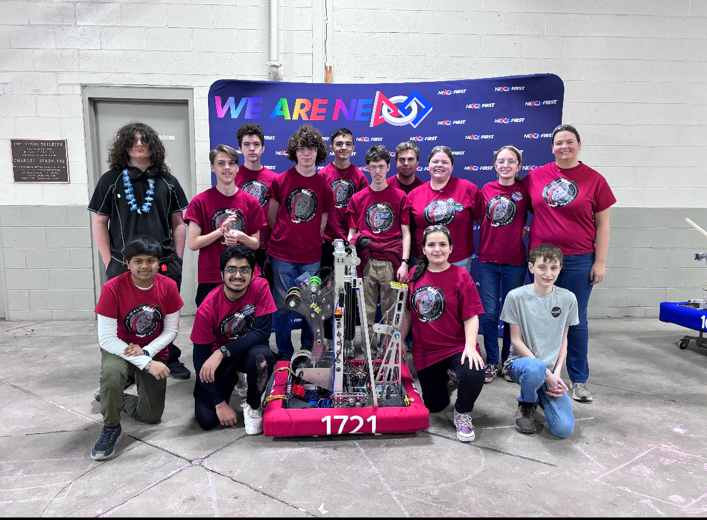
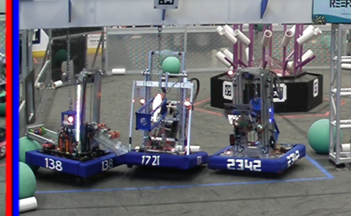

TIDAL FORCE TEAM #1721
Sponsorship Packet
2025-2026
Our Mission Statement
Our Mission is to inspire students and the greater community to solve complex problems and to change the world.
What is Tidal Force?
Tidal Force, established in 2006, is an interdisciplinary team of high-school students from the greater Concord, NH area. We annually participate in the global FIRST Robotics Competition, founded by Dean Kamen.
The competition tasks us each year with designing and building a robot to compete against other high school teams from around the world.
Tidal Force is committed to creating a professional environment that provides students with technical skills and experience in the fields of science, technology, engineering, arts and mathematics (STEAM), as well as transferable skills such as communications and project management. Our team is student-driven and has almost 25 active students and mentors. Our team lab space is located in Concord High School and we are generously supported by Concord Robotics, a 501(c)3 non-profit organization.
In 2019, our team won the most prestigious FIRST award, the Impact Award. Recognizing our team for embodying the FIRST mission to impact our community in ways that inspire today’s youth to be future leaders.
In 2024 our team won the Innovation in Control award, recognizing the team's unique self manufactured swerve drive.
The competition tasks us each year with designing and building a robot to compete against other high school teams from around the world.
Tidal Force is committed to creating a professional environment that provides students with technical skills and experience in the fields of science, technology, engineering, arts and mathematics (STEAM), as well as transferable skills such as communications and project management. Our team is student-driven and has almost 25 active students and mentors. Our team lab space is located in Concord High School and we are generously supported by Concord Robotics, a 501(c)3 non-profit organization.
In 2019, our team won the most prestigious FIRST award, the Impact Award. Recognizing our team for embodying the FIRST mission to impact our community in ways that inspire today’s youth to be future leaders.
In 2024 our team won the Innovation in Control award, recognizing the team's unique self manufactured swerve drive.
TEAM ORGANIZATION
22 Students on our 2025-2026 team
11 Parent Mentors
3 Alumni Mentors
11 Parent Mentors
3 Alumni Mentors
Student leaders:
Directors:
- Team Captain
- Assistant Team Captain
- Safety Captain
- Mechanical Lead
- Electrical Lead
- Outreach Lead
- Software Lead
Directors:
- Bob Cloutier
- Georgia Smith
- Caleb Marcel
- George LeMay
- Emily Oxnard
8 Non-Profit Board Members::
- Presidents: Maureen Cloutier, Nate Oxnard
- Vice President: John Marcel
- Treasurer: Tim Ames
- Lead Mentors: George LeMay, Srikanth Kaushik

TEAM BENEFITS
Through this program students are able to…
- Apply engineering principles to the design, build and operation
of robots for competition purposes - Learn and use CAD and other engineering software
- Hands-on experience with multi-disciplinary collaborative problem solving
- Program robots for both autonomous and human operated modes
- Travel to competitions
- Volunteer in their community
- Network with industry and engineering firms and companies
- Receive Extended Learning Opportunity school credit
TEAM IMPACT
- Participated in local events such as Aerospace Fest at the Christa McAuliffe Discovery Center, Books & Bots at Gibson's Bookstore, UNH STEM Games, Intown Concord Market Days
- Worked collaboratively with students at Franklin High School to form FRC Team #7314
- Performed robotic demonstrations at 4 Concord elementary schools as well as Rundlett Middle School, Deerfield Community School, Trinity Christian School, and the NH Department of Education
- Created 6,400 handmade masks and filters to slow the spread of the COVID-19 virus
- Educated and Mentored FIRST Lego League (FLL) teams at both Green Valley Montessori School and Christa McAuliffe Schools
- Alumni working in STEAM fields
What Is FIRST Robotics?
FIRST, (For Inspiration and Recognition of Science and Technology), is a global non-profit organization that introduces STEAM to students around the world.
Each year, FIRST challenges students to construct a robot to perform an array of tasks, and form an alliance with competing teams to play a difficult field game competition.
Teams are also tasked with fundraising to support the build of the robot, design a team brand, and develop respect and appreciation for STEAM along with additional team goals.
'FIRST firmly supports the principles of gracious professionalism and Coopertition(Cooperation + Competition),' meaning they support healthy competition, with a focus on teamwork and respect.
Each year, FIRST challenges students to construct a robot to perform an array of tasks, and form an alliance with competing teams to play a difficult field game competition.
Teams are also tasked with fundraising to support the build of the robot, design a team brand, and develop respect and appreciation for STEAM along with additional team goals.
'FIRST firmly supports the principles of gracious professionalism and Coopertition(Cooperation + Competition),' meaning they support healthy competition, with a focus on teamwork and respect.
What Can You Do To Help Our Team?
There are many costs associated with running a FIRST Robotics Competition Team.
For Example, it costs our team $6,000 to register with FIRST and another $5,000 to build a robot each year.
Your donations also help our team to purchase robot parts, equipment, computers and new tools for our lab space.
If you would like to donate materials please reach out to the emails below and we can provide an updated list of our needs.
All monetary donations are greatly appreciated and entirely tax deductible.
Adults with any skill set and an interest in the program can also volunteer to share skills or become a mentor.
Refer to our Tide chart to see what you will receive in exchange for your generous financial donations.
For Example, it costs our team $6,000 to register with FIRST and another $5,000 to build a robot each year.
Your donations also help our team to purchase robot parts, equipment, computers and new tools for our lab space.
If you would like to donate materials please reach out to the emails below and we can provide an updated list of our needs.
All monetary donations are greatly appreciated and entirely tax deductible.
Adults with any skill set and an interest in the program can also volunteer to share skills or become a mentor.
Refer to our Tide chart to see what you will receive in exchange for your generous financial donations.
Donation Waves Tide Chart
| Ripple (up to $499) | Wave ($2500 to $4999) |
|---|---|
|
|
|
| Splash ($500 to $999) | Tsunami ($5000 to $7499) |
|
|
|
| Surge ($1000 to $2499) | Megatsunami ($7500+) (Biggest one is title sponsor) |
|
|
|
Thank you!
Thank you for your consideration! The team would love to meet with your company representatives. If you would like to donate funding, materials, or time as a mentor, please contact our Non-profit Presidents Nate Oxnard and Maureen Cloutier.


Contact Information
Mailing Address
Concord Robotics
EIN #26-1916450
P.O. Box 2122
Concord, NH. 03302
Team email
concordroboticsteam1721@gmail.com
Concord Robotics
EIN #26-1916450
P.O. Box 2122
Concord, NH. 03302
Team email
concordroboticsteam1721@gmail.com
Presidents of the Non-Profit Board
Nathan Oxnard
N_oxnard@yahoo.com
Maureen Cloutier
mpncloutier@gmail.com
Nathan Oxnard
N_oxnard@yahoo.com
Maureen Cloutier
mpncloutier@gmail.com
Lead Mentors
George LeMay
glemay@lemayschoolofrealestate.com
Srikanth Kaushik
srikanth.kaushik@gmail.com
George LeMay
glemay@lemayschoolofrealestate.com
Srikanth Kaushik
srikanth.kaushik@gmail.com
Captain
Faith Smith
Assistant Captain
Arjun Kaushik
Faith Smith
Assistant Captain
Arjun Kaushik